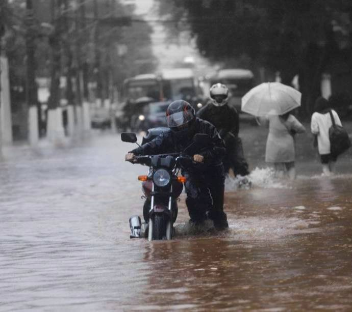

Cidades Sustentáveis: O desafio
Cidades sustentáveis atendem às necessidades das gerações presentes sem comprometer as possibilidades das gerações futuras, equilibrando o desenvolvimento econômico, social e ambiental. Isso inclui investimentos em transporte público, gestão de resíduos sólidos, preservação de áreas verdes, agricultura urbana, eficiência energética, entre outras medidas.
O desafio proposto pela IBM é encontrar soluções sustentáveis para os centros urbanos, utilizando tecnologia e conhecimentos adquiridos durante o curso.
E o problema para este projeto são as inundações nos centros urbanos


O problema: Inundações em São Paulo
Em São Paulo, as enchentes são um problema recorrente, principalmente na época do ano em que chove muito. O rápido crescimento urbano, a falta de espaços verdes e solo permeável, a obstrução de córregos e rios por lixo e outros resíduos e outros problemas tornam a cidade vulnerável a inundações.
Muitas vezes, a infraestrutura da cidade não aguenta as fortes chuvas, o que causa alagamentos de ruas, avenidas e residências, além de outros prejuízos econômicos e sociais.
A implantação de políticas públicas de gestão hídrica, a criação de parques lineares para contenção de enchentes, a desobstrução e recuperação de rios e córregos, a construção de reservatórios de água e a educação da população sobre a importância de preservar os espaços verdes e evitar o descarte de lixo em locais inadequados são apenas algumas das medidas sugeridas para combater as enchentes em São Paulo.
A falta de planejamento urbano adequado, que muitas vezes permite a construção de imóveis em locais de risco, como encostas e margens de rios, é outro problema que agrava as enchentes em São Paulo.
Além disso, a maior impermeabilização do solo decorrente do intenso processo de urbanização de São Paulo dificulta a absorção da água da chuva pelo solo e contribui para o acúmulo de água nas ruas e avenidas.
Para abordar essas questões, vários atores sociais, incluindo governos, empresas, organizações da sociedade civil e indivíduos devem trabalhar juntos. Para diminuir os efeitos das enchentes em São Paulo e garantir um futuro mais resiliente e seguro para a cidade e seus moradores, políticas governamentais que promovam o desenvolvimento sustentável, planejamento urbano adequado e gestão responsável da água devem ser implementadas.
Principais causas
Chuvas
O clima tropical em que está situada São Paulo sofre com frequência de chuvas intensas, que podem resultar em deslizamentos e inundações, principalmente em regiões com drenagem inadequada.
Urbanização
Prédios, estradas e outras infraestruturas foram construídas sobre solo natural nos distritos metropolitanos de São Paulo como resultado da rápida urbanização da cidade, que diminuiu a capacidade do solo de absorver água e aumentou o escoamento.
Mudanças
climáticas
A mudança climática é responsável pela frequência crescente e pela gravidade dos fenômenos climáticos extremos, incluindo chuvas torrenciais e secas. Isso pode piorar as enchentes em cidades como São Paulo.
Mau uso
do solo
Práticas inadequadas de uso do solo, como pavimentação sobre solo natural, construção em várzeas e desmatamento, podem aumentar o risco de inundações em São Paulo.
Desmatamento
Os riscos de inundação podem ser agravados pela perda de vegetação provocada pelo desmatamento, que pode aumentar o fluxo de precipitação e diminuir a absorção de água do solo.
Deficiência
de drenagem
Sistemas de drenagem insuficientes em São Paulo também podem causar inundações, pois a água da chuva pode se acumular em regiões baixas e ruas sem saídas ou canais adequados para direcionar a água para longe das áreas populosas.
impactos
Perda de vidas: Particularmente em locais com infraestrutura inadequada e sistemas de resposta a emergências precário, as inundações podem resultar em mortes e ferimentos graves.
Danos à propriedades: As inundações podem causar perdas financeiras para indivíduos e comunidades, danificando ou destruindo casas, empresas e outros edifícios.
Deslocamento de pessoas:A vida das pessoas pode ser interrompida por terem que deixar suas casas e cidades devido a enchentes, o que aumenta o estresse e o trauma.
Contaminação de fontes de água: As águas das enchentes podem transportar contaminantes, incluindo esgoto, produtos químicos e detritos, contaminando o abastecimento de água e aumentando a possibilidade de contrair doenças transmitidas pela água.
Falhas de infraestrutura: Problemas de infraestrutura causados por enchentes incluem colapsos de pontes, falta de energia e fechamento de estradas. O transporte e o comércio podem ser ainda mais prejudicados por essas avarias, que podem exigir reparos ou substituições caras.
Impactos econômicos:Enchentes podem atrapalhar as operações corporativas, resultar em perda de empregos e retardar o crescimento econômico, especialmente em regiões onde a agricultura e o turismo são altamente dependentes um do outro.
Danos emocionas: Pessoas e comunidades podem sofrer muito emocionalmente como resultado de inundações, incluindo preocupação, ansiedade e até mesmo transtorno de estresse pós-traumático (TEPT). Muito depois da enchente, suas repercussões ainda podem ter impacto na saúde mental e no bem-estar geral das pessoas.
Solução
Impactos positivos da solução
Alerta antecipado:Nosso programa pode enviar alertas antecipados para moradores, empresas e equipes de emergência, capacitando-os a tomar medidas preventivas para diminuir os efeitos das inundações e proteger pessoas e propriedades.
Tempos de resposta aprimorados:Nosso programa pode ajudar o pessoal de emergência a responder a situações de inundação de forma mais rápida e eficaz, fornecendo informações confiáveis.
Reduzir taxas de seguro: Ao oferecer avaliações de risco de inundação precisas e oportunas, nossa tecnologia pode ajudar as seguradoras a entender e precificar apólices de seguro contra inundações. Isso garantirá que aqueles com maior risco paguem taxas justas pelo seguro, ao mesmo tempo em que reduzirá os custos para aqueles com menor risco de inundação. Isso pode motivar proprietários e empresas a tomar medidas proativas para diminuir sua exposição ao perigo de inundação, como elevar edifícios, erguer barreiras contra inundações ou se mudar para áreas mais seguras.
Análise de dados em tempo real: para avaliações de risco de inundação precisas e atuais, seu software pode examinar dados em tempo real, como previsões meteorológicas, níveis de rios e córregos e inundações anteriores.
Solução econômica: devido aos baixos requisitos de infraestrutura e à facilidade de atualização e manutenção ao longo do tempo, nosso software pode oferecer uma solução econômica para o gerenciamento de riscos de enchentes.
Maior conscientização: Nosso software pode contribuir para melhorar a resiliência e a prontidão da comunidade, aumentando o conhecimento público sobre os riscos de inundação e a importância da preparação para inundações e das atividades de mitigação.
Software
1 Coleta de dado do user. De para com uma base de dados 3 Calcula a chance de alagamento na região dele.
Hardware
Onde tem alagamento? Qual o motivo 3Sensor de proximidade vai até o local fazer verificação.
Real time
data
Base de dados INMET 3 Mapeamento das regiões de risco.
Parcerias
3 Poder Público / Prefeitura tomar a ação.
Galo Weather
A iniciativa "Galo Weather" é uma nova maneira de parar as inundações em regiões populosas. O objetivo do projeto é ajudar as pessoas a fazer planos para climas extremos, e o próprio nome, que incorpora a imagem de um galo, simboliza a previsão do tempo.
O software do projeto "Galo Weather" notificaria os usuários sobre inundações iminentes e ofereceria análise de dados em tempo real para ajudar nos esforços preventivos, assim como um galo cantaria. Para melhor se preparar para as inundações antecipadas, o projeto também inclui tecnologia para monitorar as ruas e sistemas de drenagem da cidade.
O projeto "Galo Weather" busca aumentar a precisão e acessibilidade da cobertura de seguro contra inundações por meio de colaborações com instituições públicas, incentivando os proprietários a tomar precauções contra inundações. Ao colocar essa ideia em prática, pessoas e empresas podem ser proativas na redução do risco de inundações e minimização dos danos causados por condições climáticas extremas.
O projeto Galo Weather é uma forma original de conter enchentes em regiões populosas. O software prevê e alerta os usuários sobre possíveis perigos de inundação usando dados em tempo real e análises sofisticadas, permitindo que eles tomem medidas preventivas para proteger seus edifícios e garantir sua segurança.
O famoso galo, frequentemente utilizado como símbolo do tempo, inspirou o nome do projeto Galo Weather. Ao vincular esse conhecido animal ao projeto, torna o público mais familiar e acessível, o que facilita a interação e a compreensão das pessoas sobre a importância das medidas de mitigação de enchentes.
O projeto Galo Weather tem potencial para melhorar significativamente a vida de milhões de pessoas em todo o mundo e é uma solução original e criativa para o problema urgente de inundações em áreas metropolitanas..

Nossa equipe
RM 97631
Fabrício Saavedra
RM 98582
Guilherme Akio
RM 551981
Guilherme Morais
RM 550352
Matheus Motta
RM 99125
Vinicius Buzato
Login
LOGIN